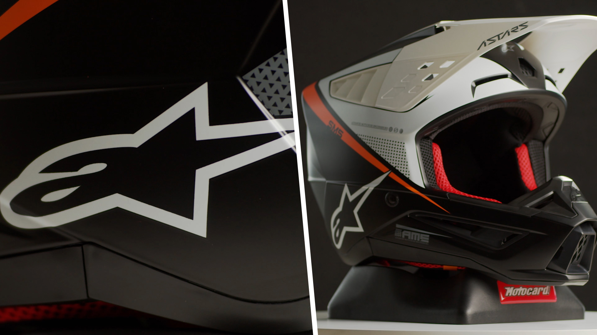

- INICIO
- TIENDA
- BLOG
- CONTACTO
- CASCOS ALPINESTARS SUPERTECH M5
- RIEJU ADQUIERE GAS GAS
- OFFROAD PARA NOVATOS: ¿ENDURO VS MOTOCROSS?
- MAPA WEB

Leer más
CASCOS ALPINESTARS SUPERTECH M5
- El casco Alpinestars Supertech M5 es la evolución de los predecesores, es una evolución mejorada que cuida muchísimo cada detalle haciendo este modelo una autentica obra de arte.
Leer más

RIEJU ADQUIERE GAS GAS
- Rieju S.A. adquiere la plataforma industrial de Enduro de Torrot que fabricaba y comercializaba los modelos bajo la marca GasGas.
Leer más
OFFROAD PARA NOVATOS: ¿ENDURO VS MOTOCROSS?
- ¡Inauguramos “Offroad para novatos”! Una nueva colección de artículos en nuestro blog para ofrecer algo de información sobre las dudas más habituales alrededor del mundo del Offroad.
Leer más